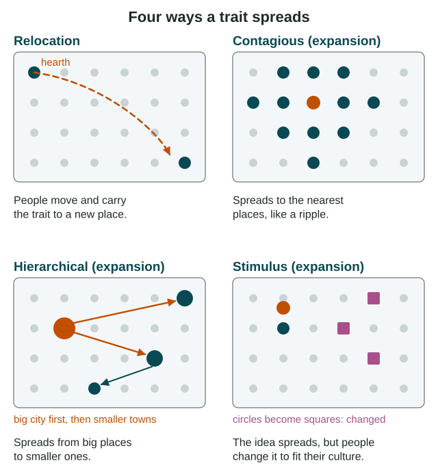
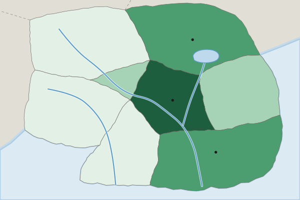

Types of Diffusion
Diffusion is the spread of a trait from its hearth.
Part 1 · Hook
Why this matters
Part 2 · Before you start
What this builds on
Part 3 · Prerequisite check
Quick check before you start
1. What is distance decay?
- Contact between places falls as distance grows
- Places get farther apart over time
- Maps distort distance near the poles
- Travel time shrinks as technology improves
Show the answer
Distance decay means interaction between two places weakens the farther apart they are.
- Correct: Contact between places falls as distance grows:
- Places get farther apart over time:
- Maps distort distance near the poles:
- Travel time shrinks as technology improves:
2. Many families from one Mexican town settle in one Chicago neighborhood because relatives live there. What is this?
- Chain migration
- Step migration
- Forced migration
- Internal migration
Show the answer
Chain migration is moving where family or friends from home already live.
- Correct: Chain migration:
- Step migration:
- Forced migration:
- Internal migration:
Part 4 · See it
See it first

Part 5 · Step by step
How it works, step by step
- A trait begins in one place, its hearthit can spread outward to other places: diffusion
- People who hold the trait move to a new placethe trait moves with them: relocation diffusion
- The trait spreads while it stays strong at homethat is expansion diffusion, by contact (contagious), down a ladder of size or power (hierarchical), or as an idea that changes (stimulus)
- Distance grows between the hearth and other placescontact falls, so contagious diffusion weakens far away, unless fast links shrink distance
Part 6 · Key ideas
Key ideas
- Diffusion is the spread of a trait from its hearth, the place where it began.
- Relocation diffusion: people move and carry the trait, as Irish migrants brought Saint Patrick's Day parades to Boston. Expansion diffusion: the trait spreads outward and stays strong at home.
- Expansion comes in three kinds. Contagious: person to person, place to nearby place. Hierarchical: from big or powerful places to smaller ones (or in reverse, as Walmart did). Stimulus: the idea spreads but is changed, as with Sequoyah's syllabary.
- Real spread mixes kinds: a trait can jump between big cities (hierarchical) and then ripple outward from each (contagious). Name each stage separately.
Part 7 · Misconception
A common mistake
The wrong idea: Any trait that reaches a faraway place got there by relocation diffusion.
What actually happens: Relocation needs people to move with the trait. K-pop reached fans in many countries through streaming while staying hugely popular in South Korea: that is expansion diffusion.
Part 8 · Check yourself
Check yourself
Exam-style questions. Anything you miss goes into your review queue.
Map
How a new dance style reached the provinces of Country A

Year the dance style first became popular (invented)
- 2025 or later
- 2024
- 2023
- 2022 (where it began)
1. Based on the map, where is the hearth of the dance style?
- The Capital Region, around Capital City
- The South Coast, around Port Bay
- The Western Uplands, in the rural west
- The Central Valley, next to the capital
Show the answer
the hearth is where a trait begins. The Capital Region is the only province in the 2022 class, the earliest year on the legend.
- Correct: The Capital Region, around Capital City: Right: the hearth is where a trait begins. The Capital Region is the only province in the 2022 class, the earliest year on the legend.
- The South Coast, around Port Bay: The South Coast is in the 2023 class, a year after the style began.
- The Western Uplands, in the rural west: The Western Uplands are in the latest class, 2025 or later.
- The Central Valley, next to the capital: The Central Valley is in the 2024 class, two years after the start.
2. The style reached the provinces of Port Bay and Lake City in 2023, a year before it reached the Central Valley, which borders the capital just as those two provinces do. Which kind of diffusion does this jump show?
- Contagious diffusion, from each place to the place next door
- Hierarchical diffusion, from the largest city to the next ones
- Relocation diffusion, because dancers left the Capital Region
- Stimulus diffusion, because each province invented a new dance
Show the answer
the style passed over the Central Valley, just as close to the capital, and went first to the next biggest cities. Moving down a ladder of city size is hierarchical diffusion.
- Contagious diffusion, from each place to the place next door: Contagious diffusion would reach every province bordering the capital at about the same time. Instead the style went first to the two provinces with the next biggest cities.
- Correct: Hierarchical diffusion, from the largest city to the next ones: Right: the style passed over the Central Valley, just as close to the capital, and went first to the next biggest cities. Moving down a ladder of city size is hierarchical diffusion.
- Relocation diffusion, because dancers left the Capital Region: The capital is still the darkest province; nothing shows that the style left its hearth.
- Stimulus diffusion, because each province invented a new dance: The map shows one dance style arriving in new places, not the idea being changed into a new form.
3. From 2024 on, the style spread from the big cities into the provinces next to them, and last to the rural west, north and south. Which kind of diffusion best describes this later stage?
- Hierarchical diffusion, skipping places in between
- Relocation diffusion, carried by people who moved away
- Contagious diffusion, from place to nearby place
- Reverse hierarchical diffusion, from small towns up to cities
Show the answer
once in the big cities, the style spread outward to neighboring provinces and then farther ones, like a ripple. That is contagious diffusion.
- Hierarchical diffusion, skipping places in between: In this stage the style reached the provinces next door before far-off ones, with no jumps.
- Relocation diffusion, carried by people who moved away: The map gives no evidence of people moving; the style kept its strength in the cities where it began.
- Correct: Contagious diffusion, from place to nearby place: Right: once in the big cities, the style spread outward to neighboring provinces and then farther ones, like a ripple. That is contagious diffusion.
- Reverse hierarchical diffusion, from small towns up to cities: The style began in the largest city, not in small towns, so it is not reverse hierarchical.
4. Match each example to the kind of diffusion it shows.
The kinds of diffusion
- Relocation
- Contagious (expansion)
- Hierarchical (expansion)
- Stimulus (expansion)
Pick a piece, then the place it belongs. Drag works too. Pick a filled place to take its piece back.
Show the answer
Relocation needs people to move. The three expansion kinds spread while the trait stays strong at home: contagious to neighbors, hierarchical down a ladder of size or power, stimulus as an idea that changes.
- Relocation: Irish migrants hold parades in Boston
- Contagious (expansion): A flu passes person to person at school
- Hierarchical (expansion): A style goes from Paris to small cities
- Stimulus (expansion): Chicken burgers replace beef in India
5. What is the main difference between relocation diffusion and expansion diffusion?
- Relocation is faster than expansion because people fly on planes
- Expansion happens in cities while relocation happens on farms
- Relocation spreads ideas while expansion spreads objects
- Relocation moves with people; expansion grows from home
Show the answer
relocation diffusion travels with migrants. In expansion diffusion the trait stays strong in its hearth while it spreads outward.
- Relocation is faster than expansion because people fly on planes: Speed is not the difference; both can be fast or slow. The difference is whether people move with the trait.
- Expansion happens in cities while relocation happens on farms: Both can happen anywhere. The difference is how the trait travels.
- Relocation spreads ideas while expansion spreads objects: Both can spread ideas or objects. The question is whether the trait moves with people or spreads from home.
- Correct: Relocation moves with people; expansion grows from home: Right: relocation diffusion travels with migrants. In expansion diffusion the trait stays strong in its hearth while it spreads outward.
6. Walmart opened its first store in 1962 in Rogers, Arkansas, a small town, and spread to other small towns before it opened many stores in large cities. Which kind of diffusion is this?
- Reverse hierarchical diffusion, from small places upward
- Hierarchical diffusion, from large cities down to small towns
- Relocation diffusion, because the founder moved to a city
- Stimulus diffusion, because each store sold different goods
Show the answer
hierarchical diffusion moves along a ladder of size. Starting in small towns and reaching big cities later climbs the ladder in reverse.
- Correct: Reverse hierarchical diffusion, from small places upward: Right: hierarchical diffusion moves along a ladder of size. Starting in small towns and reaching big cities later climbs the ladder in reverse.
- Hierarchical diffusion, from large cities down to small towns: Walmart started in a small town and reached large cities later, the reverse of the usual order.
- Relocation diffusion, because the founder moved to a city: The stores spread from a growing company; nothing says the trait moved with migrants.
- Stimulus diffusion, because each store sold different goods: The stores spread as one kind of store, not as an idea reworked in each place.
Part 9 · Summary
Summary
Part 10 · Up next
What comes next
Part 11 · Connections